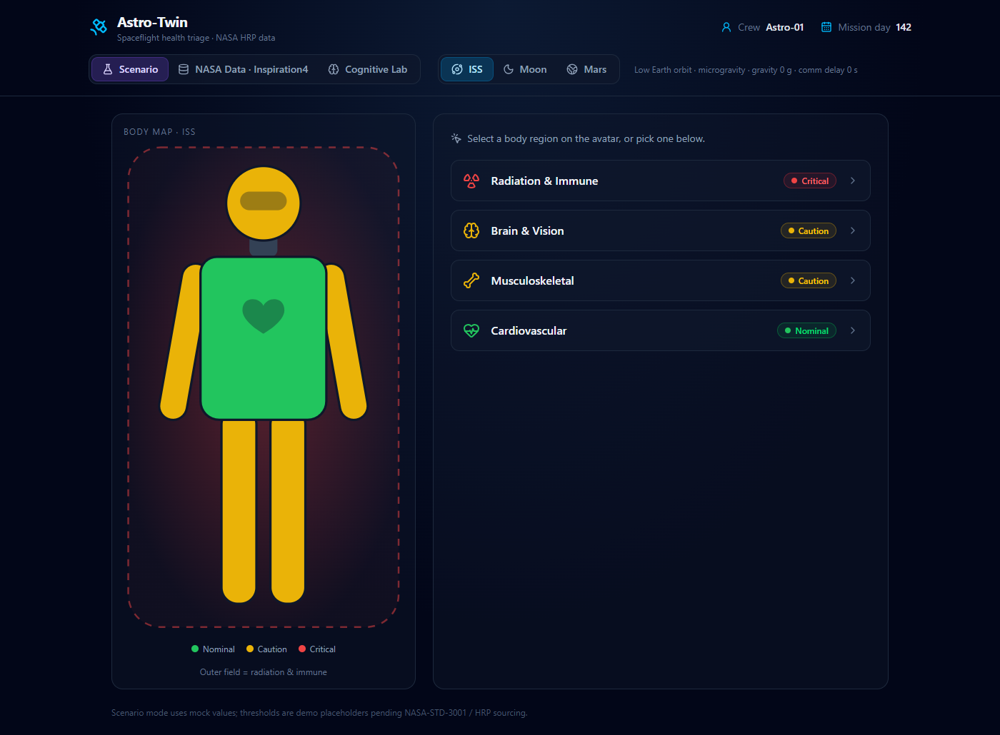
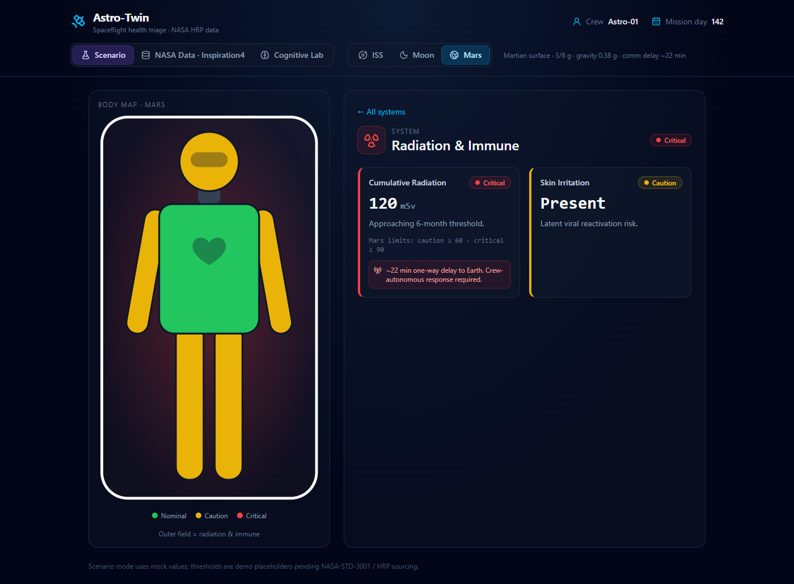
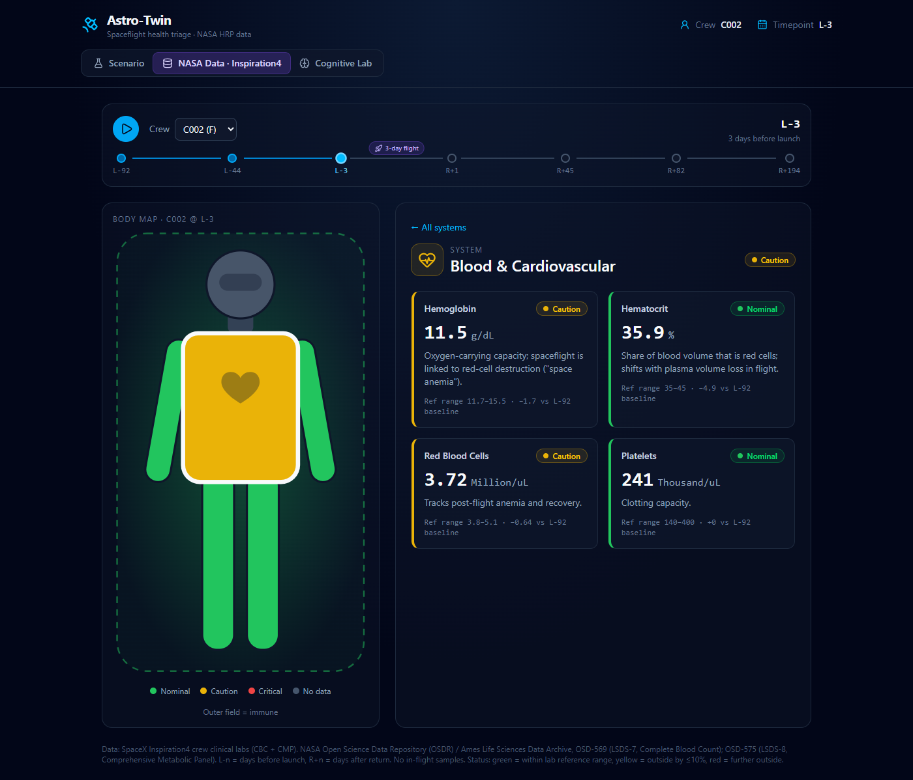
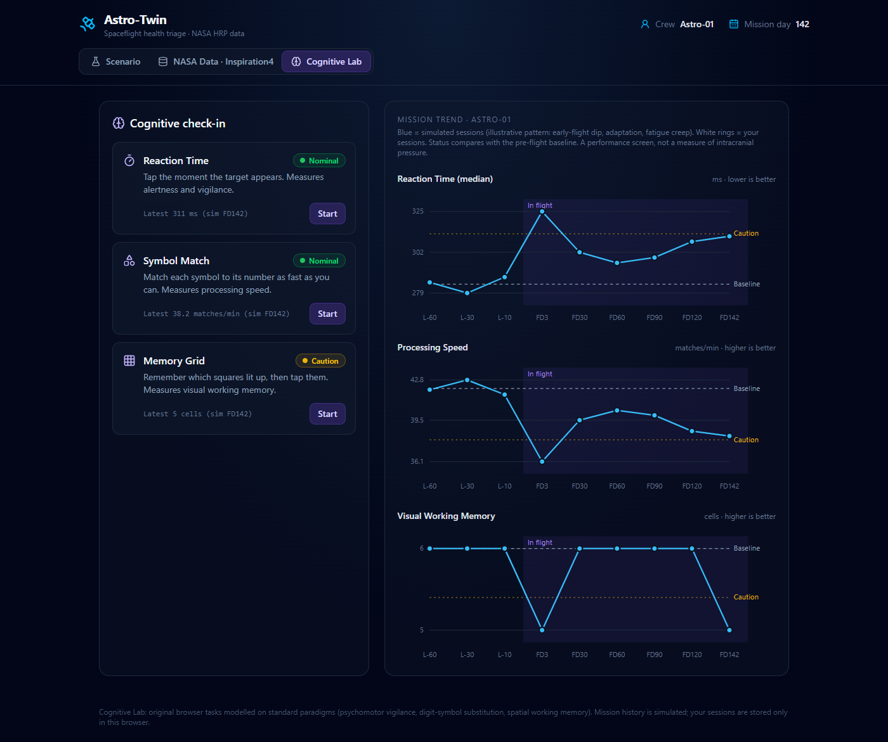

NASA Space Apps Challenge 2026
A health-triage “digital twin” that shows astronauts what needs attention, at a glance.
An interactive body map colors each body system green, yellow or red from real and mission health data.

The problem
01
Microgravity, radiation, bone and muscle loss, vision changes, each tracked by different tests.
02
Lab panels and sensor logs need an expert to say what matters today.
03
From Mars, a one-way signal can take up to about 22 minutes. Crews will have to triage on their own.
How it works
| Region | Shows |
|---|---|
| Head | Brain & vision |
| Torso | Heart & blood |
| Limbs | Bone & muscle |
| Outer field | Radiation & immune |
Nominal
Caution
Critical
Each region takes its worst reading’s color. Click it for values, limits and what they mean.
ISS · Moon · Mars

Real NASA data
From NASA’s Open Science Data Repository (OSD-569, OSD-575), graded against each lab’s own normal range.
4
crew
7
test dates
10
lab markers

Cognitive Lab
| Game | Measures |
|---|---|
| Reaction Time | Alertness |
| Symbol Match | Processing speed |
| Memory Grid | Visual memory |
Scores are compared with a pre-flight baseline and feed the avatar’s head.

Transparency & next steps
| Part | Source |
|---|---|
| Inspiration4 labs & normal ranges | Real NASA data |
| Cognitive game scores | Real, measured live |
| Scenario astronaut | Mock values |
| ISS / Moon / Mars limits | Placeholders |
| Cognitive mission history | Simulated |
Next